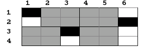

| Fişierul intrare/ieşire: | pavare.in, pavare.out | Sursă | info-arena 1.0 |
| Autor | Mircea Bogdan Pasoi | Adăugată de | |
| Timp execuţie pe test | 0.5 sec | Limită de memorie | 65536 kbytes |
| Scorul tău | N/A | Dificultate |
Pavare
Gigel, primar in orasul sau, s-a gandit sa renoveze strada principala, strada de dimensiuni N*M compusa din bucati de dimensiuni 1*1. Majoritatea bucatilor sunt stricate, dar mai exista K bucati care sunt considerate bune. Dorind sa plateasca cat mai putini bani, Gigel a luat de la un negustor blocuri de dimensiuni 2*2 la pretul unui bloc de dimensiuni 1*1. Pentru a pava strada trebuie sa amplaseze cat mai multe din aceste blocuri pe bucati stricate, fara sa paveze vreo bucata buna deoarece ar aparea denivelari, si fara sa se suprapuna blocurile 2*2. El si-a dat seama ca mai bine ar fi cumparat blocuri 1*1, pentru ca ar fi acoperit toata strada fara batai de cap, dar acum nu mai are de ales si are nevoie de ajutorul tau!
Cerinta
Determinati numarul maxim de blocuri 2*2 pe care le poate pune primarul pentru a repara strada.
Date de Intrare
Pe prima linie din fisierul pavare.in se vor afla trei numere intregi separate prin cate un spatiu: N, M si K. Pe urmatoarele K linii se vor afla perechi de numere intregi reprezentand linia si coloana pe care se afla o bucata buna.
Date de Iesire
Pe prima linie in fisierul pavare.out se va afla un numar natural reprezentand numarul maxim de blocuri 2*2 care pot fi amplasate pe strada.
Restrictii si precizari
- 1 ≤ N ≤ 150
- 1 ≤ M ≤ 15
- 1 ≤ K ≤ N*M
- Liinile sunt numerotate de la 1 la N, iar coloanele de la 1 la M
Exemplu
| pavare.in | pavare.out |
|---|---|
| 4 6 3 1 1 2 6 3 3 | 4 |
Explicatie
Acesta este un amplasament posibil al blocurilor:


» 55 comentarii
Mergi la pagina: [1] [2] [3] [4] [5] [6]S-a redus complexitatea solutiei oficiale?
ps: a stat o gramada sa-l rezolve pe calculatorul meu
Da raspunsul la testele de pe forum este corect. Explica-ne cum ne faci si poate te vom putea ajuta.
Da raspunsul la testele de pe forum este corect. Explica-ne cum ne faci si poate te vom putea ajuta.
Am doua functii principale: compl1() si compl2();
Am declarat un vector [151]; pe locul i se afla 0 daca randul i din matrice are cel putin un element; 1 daca e complet liber;
Functia compl1() cauta doua randuri consecutive libere (complet).
Daca numarul de linii al matricii e par, patratul de 2/2 nu poate avea coltul stanga sus pe o linie impara (e doar o observatie: daca se strica la un momendat ordinea in matrice, se creeaza spatii libere ce nu vor mai putea fi umplute==> nu mai gasesc solutia optima); daca numarul de linii e impar, patratul poate fi asezat oricum (oricum vor ramane spatii libere).
Functia compl2(), parcurge matricea si completeaza oriunde gaseste un spatiu de 2/2 liber;
Aplic acelas principiu si de jos in sus(completez cu compl2()si ijn oridinea de jos in sus);
Afisez numarul mai mare dintre cele doua solutii posibile(cel rezultat din prima parcurgere, si resp cel rez din cea de-a doua)
Problema se rezolva cu dinamica pe stari (una din coordonate e mai mica decat 15 park). Citeste ce s-a mai scris pe acest topic, o sa gasesti mai multe sfaturi.
0000 22222
0000 => 22222
1100 1122
1100 1122
oricum, daca pe ala nu pica prima functie, sigur pe testul asta pica comp2(), deci iti pica tot programul:
10001 10221
00001 22221
00001 => 22111
00001 00221
10001 10221
Mergi la pagina: [1] [2] [3] [4] [5] [6]
Comenteaza si tu!